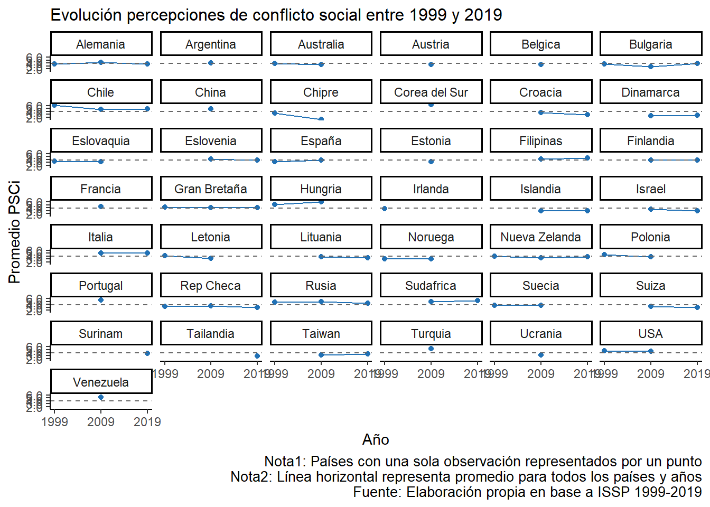
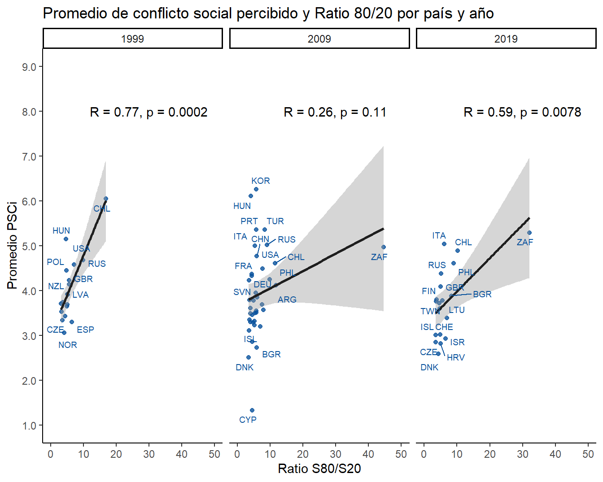
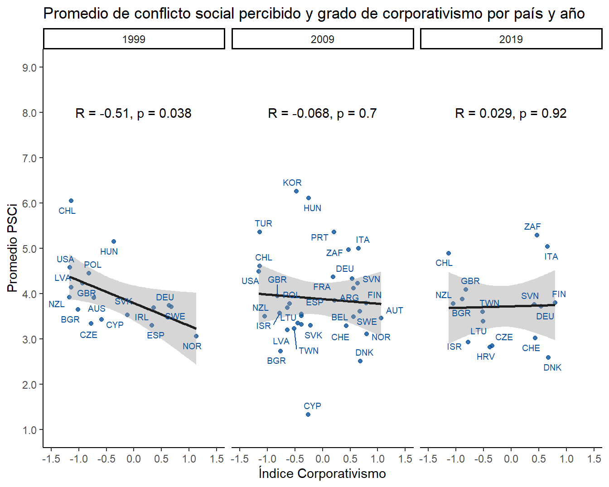

3.1 Análisis descriptivo
Aquí tabla 1 descriptiva
| Variable | N | Valores | ||
|---|---|---|---|---|
| 1999, N = 12,8211 | 2009, N = 42,6161 | 2019, N = 26,0511 | ||
| Perceived Social Conflict Index | 81,488 | |||
| Media (DE) | 3.96 (1.87) | 4.05 (2.14) | 3.75 (2.08) | |
| Rango | 0.00, 9.00 | 0.00, 9.00 | 0.00, 9.00 | |
| Posición de clase | 72,237 | |||
| 1.Capitalistas | 234 (2.3%) | 411 (1.1%) | 214 (0.8%) | |
| 2.Pequeños empleadores | 454 (4.4%) | 1,287 (3.6%) | 780 (3.0%) | |
| 3.Pequeña burguesia | 1,041 (10%) | 4,972 (14%) | 4,525 (18%) | |
| 4.Expertos directivos | 550 (5.3%) | 1,852 (5.1%) | 1,504 (5.9%) | |
| 5.Expertos sin autoridad | 583 (5.6%) | 2,005 (5.5%) | 2,421 (9.4%) | |
| 6.Supervisores calificados | 1,276 (12%) | 4,094 (11%) | 1,826 (7.1%) | |
| 7.Supervisores no calificados | 541 (5.2%) | 2,070 (5.7%) | 1,462 (5.7%) | |
| 8.Trabajadores calificados | 2,409 (23%) | 7,303 (20%) | 3,651 (14%) | |
| 9.Trabajadores no calificados | 3,281 (32%) | 12,250 (34%) | 9,241 (36%) | |
| Afiliación sindical | 78,137 | |||
| No | 7,938 (67%) | 22,892 (56%) | 16,324 (64%) | |
| Si | 3,847 (33%) | 17,831 (44%) | 9,305 (36%) | |
| Edad | 81,276 | |||
| Media (DE) | 42 (14) | 47 (16) | 49 (16) | |
| Rango | 17, 92 | 15, 98 | 15, 99 | |
| Sexo | 81,392 | |||
| Hombre | 6,681 (52%) | 20,432 (48%) | 12,798 (49%) | |
| Mujer | 6,107 (48%) | 22,166 (52%) | 13,208 (51%) | |
| Identificación política | 59,589 | |||
| Centro | 1,748 (19%) | 6,230 (19%) | 2,830 (17%) | |
| Derecha | 2,675 (30%) | 7,845 (23%) | 4,377 (26%) | |
| Izquierda | 3,135 (35%) | 9,807 (29%) | 3,982 (23%) | |
| Sin identificación | 1,464 (16%) | 9,671 (29%) | 5,825 (34%) | |
| Identidad de clase | 73,842 | |||
| 1.Clase alta | 115 (1.0%) | 228 (0.6%) | 162 (0.7%) | |
| 2.Clase media-alta | 917 (8.3%) | 2,807 (7.4%) | 1,896 (7.6%) | |
| 3.Clase media | 4,889 (44%) | 15,169 (40%) | 9,083 (36%) | |
| 4.Clase media-baja | 1,403 (13%) | 6,307 (17%) | 5,000 (20%) | |
| 5.Clase trabajadora | 3,279 (30%) | 10,134 (27%) | 6,043 (24%) | |
| 6.Clase baja | 411 (3.7%) | 3,273 (8.6%) | 2,726 (11%) | |
| Ratio S80/S20 | 77,644 | |||
| Media (DE) | 5.64 (3.03) | 7.61 (8.44) | 6.88 (5.53) | |
| Rango | 3.20, 16.86 | 3.40, 44.66 | 3.50, 32.13 | |
| Indice corporativismo | 65,224 | |||
| Media (DE) | -0.29 (0.79) | -0.07 (0.64) | -0.15 (0.65) | |
| Rango | -1.17, 1.13 | -1.15, 1.06 | -1.14, 0.80 | |
| GDP Per capita USD | 77,644 | |||
| Media (DE) | 31,815 (13,550) | 33,338 (14,847) | 37,768 (18,554) | |
| Rango | 9,680, 54,748 | 5,607, 63,254 | 7,300, 68,628 | |
| Gasto social (%GDP) | 63,744 | |||
| Media (DE) | 21 (7) | 23 (8) | 22 (8) | |
| Rango | 13, 41 | 8, 49 | 11, 47 | |
| Densidad sindical | 77,644 | |||
| Media (DE) | 37 (22) | 28 (19) | 25 (20) | |
| Rango | 12, 90 | 8, 86 | 7, 92 | |
| Fuente: Elaboración propia en base a ISSP 1999-2019, WIID, ICTWSS y OCDE | ||||
|
1
Media (DE); Rango (Min, Max); Frecuencia (%)
|
||||
En esta tabla podemos apreciar que…
A partir de la alta DS en PSCi… gráfico

Ahora, veamos qué pasa con la clase social y PSCi ….
## # A tibble: 10 x 4
## CLASS `1999` `2009` `2019`
## <chr> <dbl> <dbl> <dbl>
## 1 1.Capitalistas 3.34 3.57 3.35
## 2 2.Pequeños empleadores 3.65 3.72 3.45
## 3 3.Pequeña burguesia 4.13 4.13 3.87
## 4 4.Expertos directivos 3.6 3.32 3.2
## 5 5.Expertos sin autoridad 3.69 3.66 3.45
## 6 6.Supervisores calificados 3.81 3.75 3.52
## 7 7.Supervisores no calificados 4.07 4.17 3.76
## 8 8.Trabajadores calificados 3.98 4.04 3.71
## 9 9.Trabajadores no calificados 4.23 4.27 3.96
## 10 Total observaciones 10369 36244 25624Ahora con sindicato
## # A tibble: 3 x 4
## UNION `1999` `2009` `2019`
## <chr> <dbl> <dbl> <dbl>
## 1 No 4.02 4.20 3.86
## 2 Si 3.81 3.75 3.56
## 3 Total observaciones 11785 40723 25629Veamos unos bivariados de nivel contextual
¿Cómo se asocia la desigualdad económica con el conflicto percibido por país?

Y ahora con el nivel de corporativismo…
